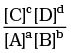
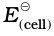

We have assumed in the previous section that the concentration of all the species involved in the electrode reaction is unity. This need not be always true. Nernst showed that for the electrode reaction:
Mn+(aq) + ne–→ M(s)
the electrode potential at any concentration measured with respect to standard hydrogen electrode can be represented by:
– ln
but concentration of solid M is taken as unity and we have
– ln (3.8)
has already been defined, R is gas constant (8.314 JK–1 mol–1), F is Faraday constant (96487 C mol–1), T is temperature in kelvin and [Mn+] is the concentration of the species, Mn+.
Table 3.1: Standard Electrode Potentials at 298 K
Ions are present as aqueous species and H 2 O as liquid; gases and solids are shown by g and s
In Daniell cell, the electrode potential for any given concentration of Cu2+ and Zn2+ ions, we write
For Cathode:
It can be seen that E(cell) depends on the concentration of both Cu2+ and Zn2+ ions. It increases with increase in the concentration of Cu2+ ions and decrease in the concentration of Zn2+ ions.
By converting the natural logarithm in Eq. (3.11) to the base 10 and substituting the values of R, F and T = 298 K, it reduces to
E(cell) =  – (3.12)
– (3.12)
We should use the same number of electrons (n) for both the electrodes and thus for the following cell
Ni(s) Ni2+(aq) Ag+(aq) Ag
The cell reaction is Ni(s) + 2Ag+(aq) →Ni2+(aq) + 2Ag(s)
The Nernst equation can be written as
E(cell) = –  ln
ln
and for a general electrochemical reaction of the type:
a A + bB cC + dD
Nernst equation can be written as:
E(cell) = – 1nQ
= – ln (3.13)
Example 3.1
Represent the cell in which the following reaction takes place
Mg(s) + 2Ag+(0.0001M) → Mg2+(0.130M) + 2Ag(s)
Calculate its E(cell) if = 3.17 V.
Solution
The cell can be written as Mg Mg2+(0.130M) Ag+(0.0001M) Ag
=
= 3.17 V – = 3.17 V – 0.21V = 2.96 V.
If the circuit in Daniell cell (Fig. 3.1) is closed then we note that the reaction
Zn(s) + Cu2+(aq) → Zn2+(aq) + Cu(s) (3.1)
takes place and as time passes, the concentration of Zn2+ keeps on increasing while the concentration of Cu2+ keeps on decreasing. At the same time voltage of the cell as read on the voltmeter keeps on decreasing. After some time, we shall note that there is no change in the concentration of Cu2+ and Zn2+ ions and at the same time, voltmeter gives zero reading. This indicates that equilibrium has been attained. In this situation the Nernst equation may be written as:
E(cell) = 0 =  –
or =
But at equilibrium,
= Kc for the reaction 3.1
and at T = 298K the above equation can be written as
= log KC = 1.1 V ( = 1.1V)
log KC = 
KC = 2 × 1037 at 298K.
In general,
= log KC (3.14)
Thus, Eq. (3.14) gives a relationship between equilibrium constant of the reaction and standard potential of the cell in which that reaction takes place. Thus, equilibrium constants of the reaction, difficult to measure otherwise, can be calculated from the corresponding EJ value of the cell.
Example 3.2
Calculate the equilibrium constant of the reaction:
Cu(s) + 2Ag+(aq) → Cu2+(aq) + 2Ag(s)
= 0.46 V
Solution
= log KC = 0.46 V or
log KC =  = 15.6
= 15.6
KC = 3.92 × 1015
Electrical work done in one second is equal to electrical potential multiplied by total charge passed. If we want to obtain maximum work from a galvanic cell then charge has to be passed reversibly. The reversible work done by a galvanic cell is equal to decrease in its Gibbs energy and therefore, if the emf of the cell is E and nF is the amount of charge passed and ∆rG is the Gibbs energy of the reaction, then
∆rG = – nFE(cell) (3.15)
It may be remembered that E(cell) is an intensive parameter but ∆rG is an extensive thermodynamic property and the value depends on n. Thus, if we write the reaction
Zn(s) + Cu2+(aq) → Zn2+(aq) + Cu(s) (3.1)
∆rG = – 2FE(cell)
but when we write the reaction
2 Zn (s) + 2 Cu2+(aq) →2 Zn2+(aq) + 2Cu(s)
∆rG = – 4FE(cell)
If the concentration of all the reacting species is unity, then
E(cell) = and we have
∆rGJ = – nF (3.16)
Thus, from the measurement of we can obtain an important thermodynamic quantity, ∆rGJ, standard Gibbs energy of the reaction. From the latter we can calculate equilibrium constant by the equation:
∆rGJ = –RT ln K.
Example 3.3
The standard electrode potential for Daniell cell is 1.1V. Calculate the standard Gibbs energy for the reaction:
Zn(s) + Cu2+(aq) → Zn2+(aq) + Cu(s)
Solution ∆rGJ = – nF
n in the above equation is 2, F = 96487 C mol–1 and = 1.1 V
Therefore, ∆rGJ = – 2 × 1.1V × 96487 C mol–1
= – 21227 J mol–1
= – 212.27 kJ mol–1
Intext Questions
3.4 Calculate the potential of hydrogen electrode in contact with a solution whose pH is 10.
3.5 Calculate the emf of the cell in which the following reaction takes place:
Ni(s) + 2Ag+ (0.002 M) → Ni2+ (0.160 M) + 2Ag(s)
Given that = 1.05 V
3.6 The cell in which the following reaction occurs:
has = 0.236 V at 298 K. Calculate the standard Gibbs energy and the equilibrium constant of the cell reaction.